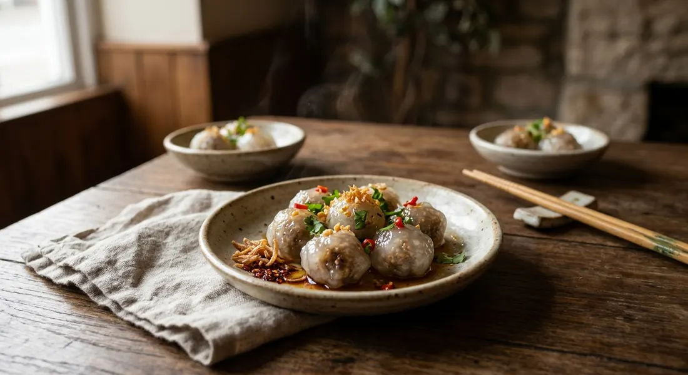

A sweet-savoury pork, radish and peanut filling sealed inside translucent steamed tapioca pearls — the dumpling every market in Thailand sells next to khao kriap pak moh.

สาคูไส้หมู is a name that does exactly what it says: สาคู (sakoo) is sago — in practice small tapioca pearls — and ไส้หมู (sai moo) is the pork filling wrapped inside. The pearls are soaked until they cling together, wrapped around a cooked filling, and steamed until the shell turns from chalky white to glass — the one test every Thai source agrees on for doneness.
It is a market snack first and a home project second. Wongnai's write-up calls it a childhood memory — the thing you were always bought on the walk around the market with your mother — and notes the flavour properly: หวาน ๆ เค็ม ๆ, sweet and salty together, from a filling fried with palm sugar, light soy and crushed peanuts, all wrapped in a shell that is mostly there for the chew. The two vendors' stalls always stand side by side: sakoo sai moo and khao kriap pak moh, one pearl-skinned, one cloth-thin, sold out of the same little plastic boxes with the same fried garlic on top.
Eaten properly, each ball sits on a piece of lettuce with a sliver of bird's eye chilli and a sprinkle of fried garlic — Kapook's serving note is that the side vegetables and chillies are not garnish but part of the dish. Wongnai adds a market trick for colour: soak the pearls in butterfly pea or roselle water instead of plain, and the dumplings come out blue, purple or pink.
| Thai | English | Amount |
|---|---|---|
| สาคูเม็ดเล็ก | Small tapioca pearls | 200 g |
| หมูสับ | Minced pork | 150 g |
| ไชโป๊หวาน | Sweet pickled radish, finely chopped | 150 g |
| ถั่วลิสงคั่ว | Roasted peanuts, crushed | 100 g |
| หอมแดง | Shallots, minced | 80 g |
| กระเทียม | Garlic | 30 g |
| รากผักชี | Coriander root | 15 g |
| พริกไทยเม็ด | White peppercorns | 1/2 tbsp |
| น้ำตาลปี๊บ | Palm sugar | 2 1/2 tbsp |
| ซีอิ๊วขาว | Light soy sauce | 1/2 tbsp |
| น้ำมันพืช | Vegetable oil | 2–3 tbsp |
| กระเทียมเจียว, ผักสด | Fried garlic, lettuce, fresh chillies, coriander | to serve |
The market-scale batch (Kapook): 500 g minced pork, 400 g shallots, 1/2 cup salted radish, seasoned with oyster sauce, seasoning sauce and 3/4 cup palm sugar, finished with 1 cup ground peanuts — the same filling their vendors scoop onto both khao kriap pak moh skins and into sakoo. The coloured batch (Wongnai): 250 g pearls soaked in butterfly pea or roselle water, 270 g pork, 100 g salted radish and 150 g palm sugar. The big-pan batch (Finfin Cooking): 250 g pork, 150 g sweet radish, 100 g peanuts, 100 g coconut sugar — her measure is 3 g of filling and 3–4 g of pearls per ball, about 150 dumplings.
The radish — sweet or salted. This is the real split. Aroifin, Finfin Cooking and EzyThaiCooking use ไชโป๊หวาน, sweet pickled radish, and balance it with soy and sugar. Wongnai and Kapook use ไชโป๊เค็ม (salted radish, หัวผักกาดเค็ม) and lean on a bigger pour of palm sugar — 150 g in Wongnai's batch — to land at the same sweet-salty place. Same ingredient, opposite starting point; check the label on the jar.
How the pearls meet the water. Finfin Cooking and EzyThaiCooking soak the washed pearls in cold water (ten to thirty minutes), drain and knead. Kapook pours hot water straight over the pearls and kneads until they hold a ball — no standing soak at all. Both roads lead to a workable dough; the hot-water route is faster, the soak route more forgiving.
The seasoning bottles. Finfin Cooking, Aroifin and EzyThaiCooking season with light soy alone. Kapook's filling adds oyster sauce and seasoning sauce (ซอสปรุงรส) to the pan as well — the fuller, market-style flavour, and the reason Kapook's filling can be scooped straight onto khao kriap pak moh skins with nothing added.
The sweetener. Palm sugar everywhere (Aroifin, Wongnai, Kapook, Finfin Cooking's coconut sugar) except EzyThaiCooking, which uses plain white sugar — the only source that does, and it shows in a cleaner, lighter sweetness.
The wrap, hand or cloth. Most home recipes wrap in the palm. Kapook's vendors spread the pearls over a cloth stretched across the steaming pot and wrap each ball there, sprinkling the finished dumplings with water before steaming — a stall technique that keeps the shells from drying as the tray fills up.
This recipe is translated from the following Thai-language sources. Where they disagree, we've said so.
1. Aroifin — "วิธีทำ สาคูไส้หมู สูตรแป้งนุ่มหนึบ ไส้อร่อยเข้มข้น" (the recipe used here) — aroifin.com
2. Finfin Cooking — "สูตร สาคูไส้หมู วิธีทำ ง่าย ๆ" (the measured-grams home batch; 3 g filling, 3–4 g pearls per ball) — finfincooking.blogspot.com
3. Wongnai — "แจกสูตรฟรี สาคูไส้หมู ขนมไทยเหนียวนุ่ม" (salted radish and palm sugar; the butterfly pea and roselle colouring) — wongnai.com
4. Kapook Cooking — "ข้าวเกรียบปากหม้อ สาคูไส้หมู อาหารว่างแบบไทย ๆ ยอดนิยม" (the market-stall batch, shared filling with khao kriap pak moh; the cloth-over-pot wrapping) — cooking.kapook.com
5. EzyThaiCooking — "สูตรอาหารไทย สาคูไส้หมู" (the white-sugar version; the 3–5 minute steam) — ezythaicooking.com